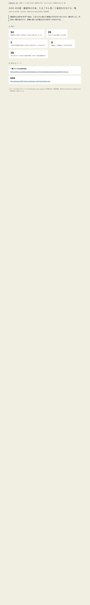

共有資料の一覧
／ 確認ページ #453 453番：確認列の中身、たまごさん発／工場発を仕分ける一覧
#453 453番：確認列の中身、たまごさん発／工場発を仕分ける一覧
2026-09-06 実装・main合流・本番(GitHub Pages)反映まで実測確認
確認待ち34件を1件ずつ読み、たまごさん発か工場発かの手がかりをつけた一覧を作った。今回は一覧作成だけで、実際に閉じる作業は次の10件ずつの回でやる。
② 数字
34
確認待ちの件数（今日時点。67件から既に減っている）
26
たまごさん発と確定できた件数
2
工場の内部事情と確定した件数（56件仕分け・112本仕分け）
6
要確認・工場発疑い（次の回で判定）
38
次に10件ずつへ分割する対象の総数（34件＋仕組み構築4件）
④ 押せるリンク
一覧ファイル(GitHub)
https://github.com/tamago2022/tamago-shinchoku/blob/main/status/split/453-list.json
進捗表
https://tamago2022.github.io/tamago-shinchoku/index.html
⑤ このページ自体の実物スクリーンショット(2026-09-06実測)
ヘッドレスChromeでこの確認ページ自体を開き、上の数字・リンクがそのとおり表示されていることを画像で裏取りしたもの。
